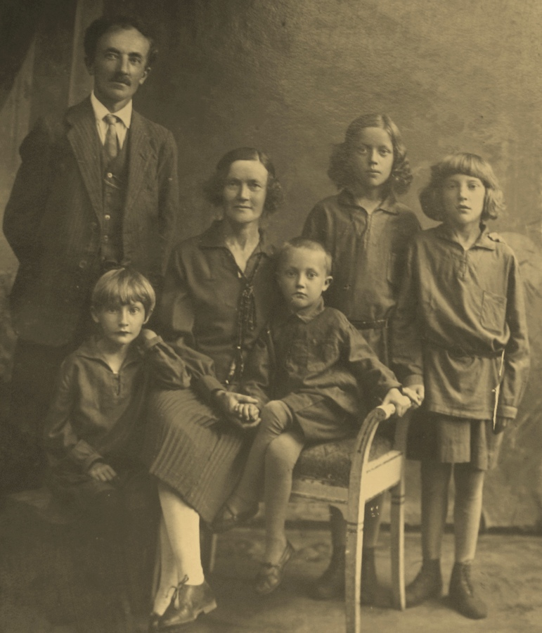
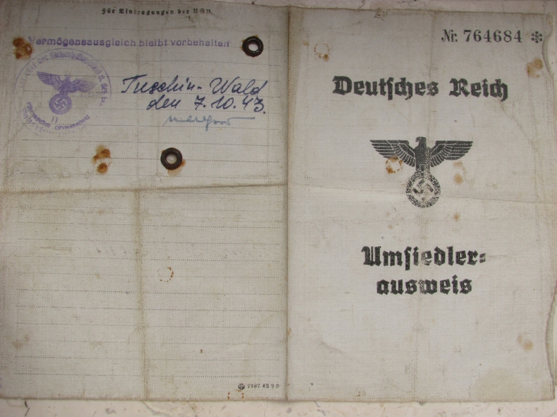

Меня звали Виктор Шнекенберг.
В моей жизни не было ничего исключительного, напротив, это была простая жизнь простого человека.
Миллионы других прожили такую же жизнь.
Конечно, у кого-то было что-то, чего не было в моей жизни, ну а в моей было то, что было только в моей.
Мой отец, Отто-Александр Шнекенберг, родился 01.04.1887 года в городе Белосток, что расположен на северо-востоке Польши.
Приблизительно в 1915 году он переехал в город Брянск.
Женился на девушке по имени Пелагея и в браке на свет появились мои сёстры Эля ( 1919), Зена (1922), Регина (1924) и я, Виктор (02.03.1927).
В результате несчастного случая моя левая нога была повреждена и после последующих операций стала короче на несколько сантиметров.
Это увечье, плюс то, что я был самым младшим ребёнком ( и единственным мальчиком!), позволяло мне в полной мере наслаждаться заботой и вниманием ко мне со стороны родителей и сестёр.

Семейная идиллия продолжалась недолго.
В 1933 году отца угнали в Сибирь, где его следы затерялись и с тех пор мы никогда не смогли узнать, где и как он погиб.
А потом началась война.
Мы жили рядом с аэродромом, который постоянно бомбили, и нам приходилось прятаться в подвале.
А потом пришли немцы.
Это продолжалось недолго, потому что советские войска смогли переломить ход войны и немцам пришлось отступать.
И Адольф дал приказ: "вся немецкая кровь должна вернуться на родину".
И нас повезли в Германию.
Разместили нас в городе Гера.
Мы получили удостоверения немецких переселенцев.
Вокруг слышалась немецкая речь, которую я знал только по школьной программе.


Деваться было некуда, надо было продолжать жить.
Я поступил в училище и выучился на слесаря.
В 1944 году, когда советские и американские войска вошли в Германию, нас перевели в американскую оккупацционную зону в Баварию.
Там, в Розенхайме, я и прожил всю свою жизнь, работая слесарем на фабрике.
Пролетели годы, незаметно подошла пенсия.
В 1993 году я познакомился с молодым человеком, по имени Николай.
Он приехал из России и хотел жить в Германии.
Мы оба были заядлыми рыбаками и на этой почве возникла наша дружба.
Было интересно поговорить с ним о жизни, войне, политике.
В 1995 году к Николаю приехала мать, с которой он меня познакомил.
Её звали Пелагея, также, как и мою маму.
У нас возникли чувства и мы поженились.
Николая я усыновил, он получил мою фамилию.

К сожалению, несмотря на усыновление с правами несовершеннолетнего, Николая не оставили в Германии и ему пришлось покинуть страну.
Мы с Пелагеей остались одни.
Я всю жизнь боялся разного рода учреждений и служащих, и не вступал с ними в борьбу, хотя и мечтал о полноценной семье.
Мне хотелось жить тихо и спокойно, без потрясений.
В 2008 году я попал в аварию и врачи вставили мне в ногу титановый штырь.
Я смеялся - теперь я очень дорогой, во мне сидит железяка стоимостью в 40 тысяч евро!
О смерти я не думал, так как хотел прожить лет 120, а дальше - уж как бог захочет.
Но было интересно: заберёт ли после моей смерти государство свой титановый штырь или так и оставит во мне?
В 2010 году к нам прилетал Николай с супругой Анной, они живут в Доминиканской республике.

Мы купили компьютер, подключили интернет и, благодаря Скайпу, у нас была возможность общаться.
Для меня было интересно, как далеко шагнула техника и как на экране монитора можно видеть людей, находящихся за десятки тысяч километров.
Что-то интересное стало происходить с моей памятью: я прекрасно помнил все стихи, песни, услышанные ещё в детстве в России и готов был цитировать их часами, но совершенно не помнил, что я ел на завтрак.
Рыбалку, по причине здоровья, пришлось оставить.
Сил оставалось только на то, чтобы сходить за покупками в магазин или повозиться с цветами на огородике.
В июле 2014 года мне стало плохо, вызвали скорую, меня оперировали.
Неделю шла борьба между жизнью и смертью.
Смерть победила и 1 августа я умер.
Мне было 87 лет.
Вот так и прошла моя жизнь, простая жизнь простого человека.
Сейчас меня нет с вами, но я знаю, что вы помните обо мне.
А я, где бы я сейчас не был - люблю вас, ребята!
Виктор поёт военную песню.
Виктор поёт песню "Кукарача".
Виктор читает басню "Мартышка и очки". 10 января 2014 год.
Виктор, мы тебя помним и любим!
* 02.03.1927 - † 01.08.2014